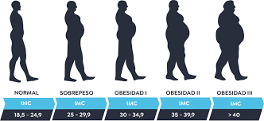

Obesidad
La obesidad en México es básicamente tener tanta grasa en el cuerpo que te empieza a enfermar. Se está así porque la comida chatarra y el refresco son más baratos y fáciles de conseguir que la comida sana, casi no hay movimiento en el día y, además, los genes hacen guardar grasa muy rápido. En pocas palabras: el país está lleno de comida que engorda y hace falta tiempo o dinero para cuidarse.
El problema real es que en México la comida chatarra es la reina de la tiendita y el súper porque es barata y te llena rápido, mientras que las verduras y el agua buena salen caros. Como el cuerpo del mexicano guarda grasa bien fácil por herencia, si no te mueves y solo le metes refresco, el cuerpo truena y se inflama de más. Vivir con obesidad es tener un cuerpo limitado para las actividades más simples. Este estado de inflamación constante va apagando tu energía y tu seguridad, haciendo que te sientas un extraño en tu propia piel mientras el riesgo de enfermarte crece día con día. La carga no es solo física, sino también emocional, al enfrentar un entorno que señala el problema pero que no ofrece soluciones reales ni accesibles para sanar.

Para no llegar a tener esta enfermedad, se deben seguir estas acciones que son las más importantes:
- Cambia el refresco o jugos por agua; es la forma más rápida de quitarle azúcar al cuerpo.
- No necesitas gimnasio, con caminar rápido o bailar en tu casa cuenta.
- Cocine la comida asada o al vapor en lugar de las frituras de la calle.